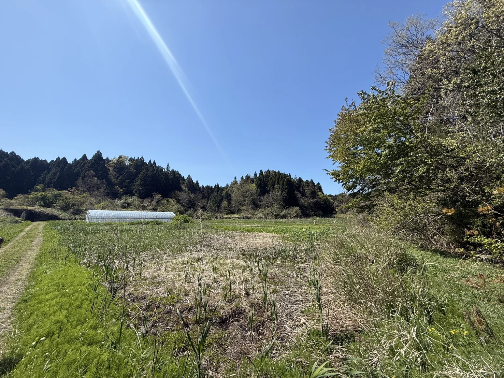
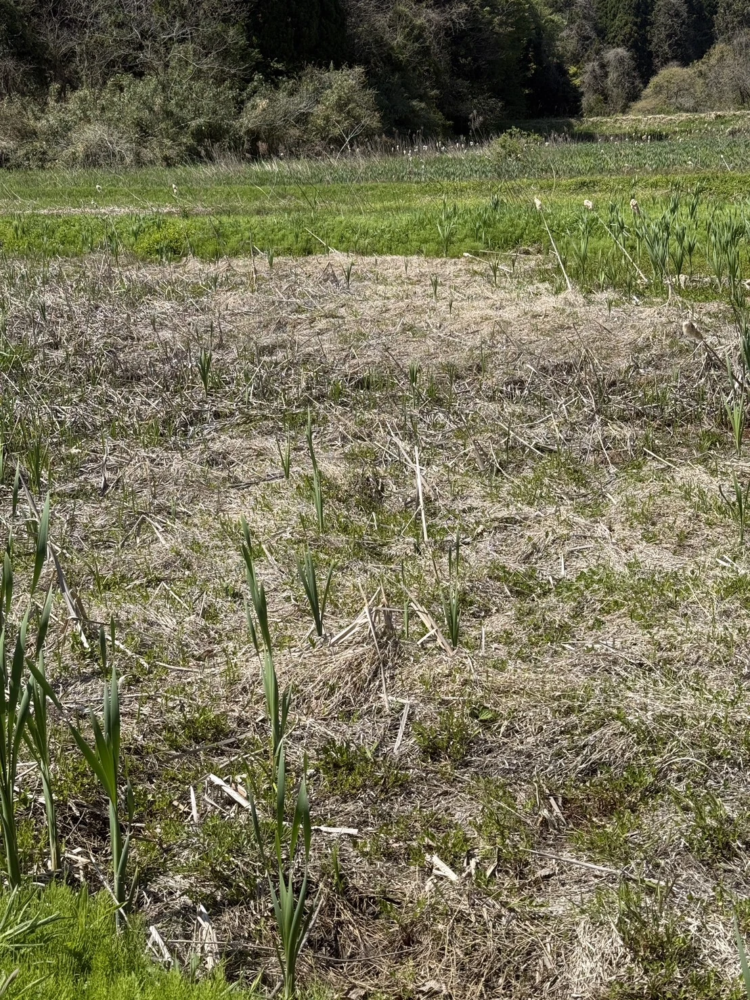
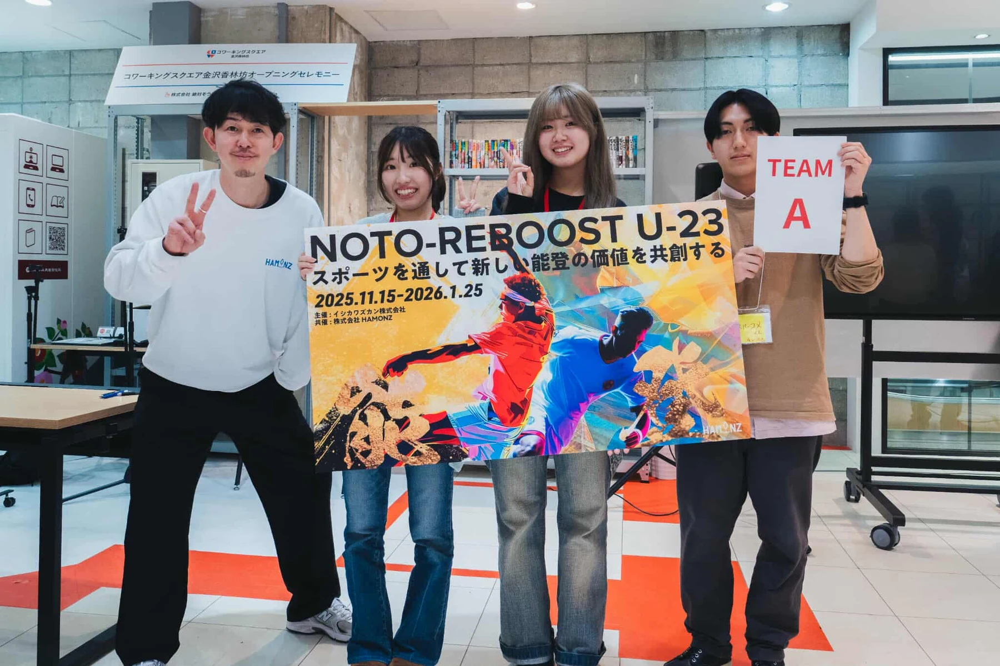
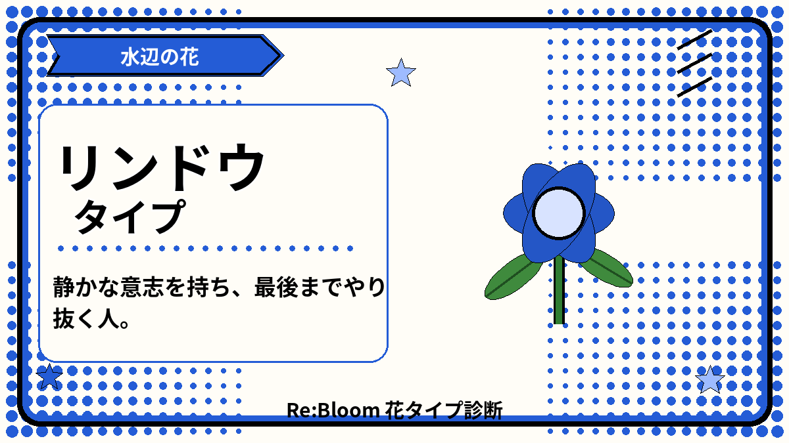
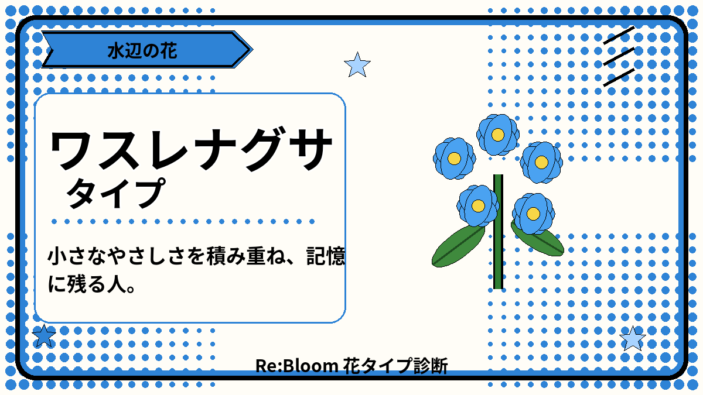

能登の土地からFIRST FIELD TEST
2026.9.20 珠洲市内で実施予定
使われなくなった土地に、
もう一度、人が集まる
理由を。使われなくなった
土地に、もう一度。
人が集まる理由を。
NOTO Re:Bloomは、地域住民と学生が、現在使われていない農地に集まり、泥スポーツを一緒につくり楽しむ実証プロジェクトです。2026年は農地再生の完成を急がず、土地を知る人と次に関わる人が生まれるかを確かめます。
会場候補を確認中40人は受入上限交通・安全を調整中
土地を知る→一緒につくる→次へつなぐ


遊びは入口。
関わりは、その先へ。
関わりは、その先へ。
まず、知るWHY THIS MATTERS
使われていない農地は、
ただの「空き地」ではありません。
人の手が離れると、草刈りや水路管理の負担が積み重なり、再び使うためのハードルが上がります。背景には担い手不足や人口減少があり、能登では地震と豪雨の被害も重なりました。
公的統計では「荒廃農地」の数値を使用しています。農林水産省資料を見る ↗
能登のいまNOTO AFTER DISASTER
復旧が進む一方で、
まだ戻れていない農地があります。
能登半島地震と奥能登豪雨は、農地だけでなく、水路・農道・ため池など、農業を支える基盤にも大きな被害を与えました。大規模な復旧は行政や農業者が担います。私たちは、その隣で「土地を知る人、関わる人を増やす」小さな入口をつくります。
能登の被害と復旧状況を見る →10,522件
地震による農地・農業用施設被害
3,261件
奥能登豪雨による被害
約7割
2025年の営農再開面積
2026年の実証OUR FIRST TEST
完成を急がず、
次へ進む条件を確かめる。
一度のイベントで農地再生を完成できるとは考えていません。人が集まれるか、無理なく関われるか、次も関わりたい人が生まれるかを確かめます。
土地と地域を知る
地域住民と学生が会う
泥スポーツを一緒につくる
土地・費用・反応を残す
次年度の活用を考える
準備ノートCURRENT STATUS
会場は、
まだ確定していません。
上黒丸地区の元レンコン田を候補としています。正式な使用許可、泥の深さや危険物、水源・排水、道路、駐車、トイレ、更衣、原状回復などを確認し、条件を満たせる場合に実施します。
候会場候補
上黒丸地区の元レンコン田を確認中です。
中現地条件・許可
安全と地域側の合意を優先して確認します。
後詳細案内
集合場所や交通は、確定後に対象者へ共有します。

チームのはじまりOUR TEAM
出会いは、
能登の未来を考える場でした。
🏆 NOTO-REBOOST U-23 最優秀賞
学年も、住む場所も違う学生3人が、能登の復興をテーマにしたプログラムで出会いました。アイデアを発表して終わるのではなく、現地で一つずつ実現するために、NOTO Re:Bloomとして活動しています。
3人の花タイプと役割を見る →準備の裏側WORK BEFORE THE DAY
現地での確認と相談を、
ひとつずつ。
現地確認、安全設計、交通、参加者、予算。9月20日の開催条件を一つずつ整理し、確定したことと確認中のことを分けて記録します。
思い
現在
学生3人の原点を、言葉にしました。
なぜ能登に関わるのか。活動を通して見たい未来を、メンバーそれぞれの言葉で残しています。
活動報告を読む ↗ 安全泥遊びの安全設計を、実践者から学びました。
転倒、動線、子どもの見守り。経験だけで判断せず、外遊びを継続運営する団体へ相談しました。
活動報告を読む ↗ 発信活動の背景と準備状況をまとめたサイトを公開。
プロジェクトの目的、現地の状況、イベント、安全面、参加・協力の方法を一つの場所から確認できるようにしました。
活動報告を読む ↗計画を、本格再生前の実証へ組み直しました。
会場、交通、保険・救護、最低予算は未確定です。地域住民と第2回NOTO-REBOOST参加学生を中心に、安全に実施できる条件を確認しています。
現在地を更新中01現地で確認する
土地の状態、水、動線を現地で確かめる。
02条件を整理する
確定事項と、これから調整する項目を分ける。
03経験者に相談する
安全と運営に、実践者の知見を取り入れる。
04記録を残す
次の整備や活用にも共有できる形にする。
関わり方はいろいろJOIN THE TEST
今年の実証を、
一緒につくる。
企画から関わる学生、地域から参加・協力する方、専門性を貸す企業・団体。それぞれの立場から無理のない関わり方を相談します。
企業・団体の方へPARTNERSHIP
専門性が加わると、
学生の挑戦は実行力に変わります。
土地整備、機材、衛生用品、印刷、広報、紹介。資金だけでなく、事業で培った力そのものが、現地の安全と体験の質を高めます。
- 土地上黒丸地区の候補地を確認中
- 開催2026年9月20日を予定
- 相談20分程度のオンライン面談
- 報告実施後に写真・活動内容を共有
学生企画メンバー募集STUDENT CO-CREATION
当日だけではなく、
企画から一緒に。
競技内容、子どもや家族が楽しめる場づくり、地域住民との交流、当日の進行、WebやSNSでの伝え方を一緒に考える学生を募集しています。一人参加・地域活動未経験でも、説明を聞いてから正式参加を決められます。
いま、ここまでNOW BLOOMING
計画を学び直し、
実証へ組み直しました。
土地や費用、管理方法を調べたことで、一度整備するだけでは再生にならないと分かりました。熱意を下げたのではなく、責任を持てる順番へ変えています。
- チーム結成・最優秀賞
NOTO-REBOOST U-23で出会い、実現へ向けて動き始めました。
- 現地調査と計画の見直し
土地の状態、費用、安全、継続管理の課題を整理しました。
- 本格再生前の実証へ再設計
参加者、交通、会場、予算を無理のない形へ組み直しています。
- 泥ん子運動会（予定）
安全条件を満たせる場合に、珠洲市内で午後・半日程度の開催を予定しています。
9月20日までの仕事PREPARATION BOARD
「やりたい」を、
「安全にできる」へ。
土地・会場、安全・保険、競技・体験、人・役割、資金・物品・技術の5領域に分け、必要な確認と準備を進めています。
土地・会場
上黒丸地区の元レンコン田が候補。許可、泥、水、排水、道路、トイレ等を確認します。
交通
第2回NOTO-REBOOST参加学生の移動、金沢からの乗り合わせ、費用負担を調整します。
安全・保険
救護、保険、緊急対応、雨天時の判断基準を最終決定します。安全性を下げて実施しません。
参加者・地域
第2回NOTO-REBOOST参加学生と地域住民・家族を中心に、直接案内を進めます。
最低予算
借用品、トイレ、給排水、交通を分け、複数シナリオで正式見積を確認します。
今の重点：会場のGo/No-Go材料、交通、シナリオ別最低予算、保険・救護、Googleフォームの監査。
よくある質問FAQ
いま、よく聞かれること。
泥ん子運動会はいつ、どこで行いますか？
2026年9月20日、珠洲市内で午後半日の開催を予定しています。上黒丸地区の元レンコン田が候補ですが、会場はまだ確定していません。
誰でも今すぐ参加申し込みできますか？
主な参加者は第2回NOTO-REBOOST参加学生と地域住民・家族です。不特定多数への大規模募集は行わず、一般参加の案内は会場と交通の条件が整ってからお知らせします。
学生企画メンバーは何をしますか？
当日作業だけではなく、競技、場づくり、広報、進行、振り返りを一緒に考える共創メンバーです。安全、会場、予算、個人情報などの最終責任はNOTO Re:Bloomが担います。
泥スポーツで農地を再生するのですか？
泥スポーツ自体を農地再生とは位置づけていません。土地を知り、人が出会い、次も関わりたい人が生まれるかを確かめる、本格再生前の実証です。
今日の一歩ONE SMALL STEP
今日、
何から始める？
ボタンを押すと、今日できる小さな関わり方が出てきます。
3人の花タイプOUR FLOWER TYPES
診断すると、3人は
こんな花でした。
同じゴールを目指していても、考え方や動き方は少しずつ違います。花タイプの結果と、実際に担っている役割や能登への思いを重ねて、学生メンバーを紹介します。
Member Bloomリーダー・現地調整

マルコメくん
静かな意志を持ち、最後までやり抜く人。
震災後、何度も能登でボランティアに参加。地域の方との調整や現地での窓口を担い、協力してくださる方への感謝と「3人でつくること」を大切にしています。
Member Bloom推進・企画整理

ユズ
小さなやさしさを積み重ね、記憶に残る人。
能登半島豪雨後には、被災した写真の洗浄ボランティアに参加。議論の論点を整理し、企画を具体的な行動へ落とし込む推進役を担っています。
Member Bloom調査・柔軟なサポート

ユア
小さな場所にも根を張り、周りをやさしく豊かにする人。
子どもの頃に訪れた能登の景色と人のあたたかさを原点に活動。必要な情報を調べ、問いを投げかけながら、地元の方の気持ちを優先して柔軟に動いています。
花タイプは性格を決めるものではなく、回答時点の傾向を楽しく言葉にしたものです。
✿次の関係を、
次の関係を、
一緒につくる。
企画から関わる学生、地域から参加する方、専門性を貸す企業・団体。それぞれの入口から、無理のない一歩を相談できます。